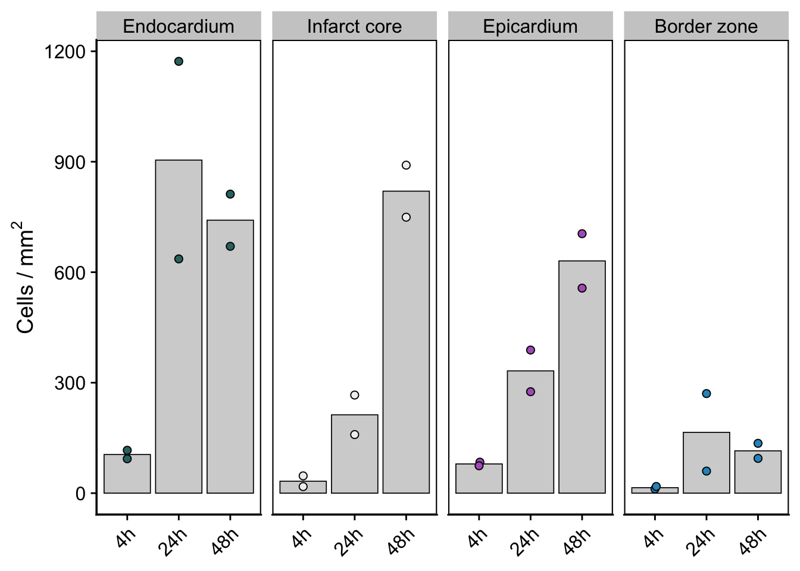

Last updated: 2024-03-21
Checks: 7 0
Knit directory: mi_spatialomics/
This reproducible R Markdown analysis was created with workflowr (version 1.7.1). The Checks tab describes the reproducibility checks that were applied when the results were created. The Past versions tab lists the development history.
Great! Since the R Markdown file has been committed to the Git repository, you know the exact version of the code that produced these results.
Great job! The global environment was empty. Objects defined in the global environment can affect the analysis in your R Markdown file in unknown ways. For reproduciblity it’s best to always run the code in an empty environment.
The command set.seed(20230612) was run prior to running
the code in the R Markdown file. Setting a seed ensures that any results
that rely on randomness, e.g. subsampling or permutations, are
reproducible.
Great job! Recording the operating system, R version, and package versions is critical for reproducibility.
Nice! There were no cached chunks for this analysis, so you can be confident that you successfully produced the results during this run.
Great job! Using relative paths to the files within your workflowr project makes it easier to run your code on other machines.
Great! You are using Git for version control. Tracking code development and connecting the code version to the results is critical for reproducibility.
The results in this page were generated with repository version e6213a5. See the Past versions tab to see a history of the changes made to the R Markdown and HTML files.
Note that you need to be careful to ensure that all relevant files for
the analysis have been committed to Git prior to generating the results
(you can use wflow_publish or
wflow_git_commit). workflowr only checks the R Markdown
file, but you know if there are other scripts or data files that it
depends on. Below is the status of the Git repository when the results
were generated:
Ignored files:
Ignored: .DS_Store
Ignored: .Rproj.user/
Ignored: analysis/.DS_Store
Ignored: analysis/deprecated/.DS_Store
Ignored: analysis/molecular_cartography_python/.DS_Store
Ignored: analysis/seqIF_python/.DS_Store
Ignored: analysis/seqIF_python/pixie/.DS_Store
Ignored: analysis/seqIF_python/pixie/cell_clustering/
Ignored: annotations/.DS_Store
Ignored: annotations/SeqIF/.DS_Store
Ignored: annotations/molkart/.DS_Store
Ignored: annotations/molkart/Figure1_regions/.DS_Store
Ignored: annotations/molkart/Supplementary_Figure4_regions/.DS_Store
Ignored: data/.DS_Store
Ignored: data/140623.calcagno_et_al.seurat_object.rds
Ignored: data/Calcagno2022_int_logNorm_annot.h5Seurat
Ignored: data/IC_03_IF_CCR2_CD68 cell numbers.xlsx
Ignored: data/Traditional_IF_absolute_cell_counts.csv
Ignored: data/Traditional_IF_relative_cell_counts.csv
Ignored: data/pixie.cell_table_size_normalized_cell_labels.csv
Ignored: data/results_cts_100.sqm
Ignored: data/seqIF_regions_annotations/
Ignored: data/seurat/
Ignored: output/.DS_Store
Ignored: output/mol_cart.harmony_object.h5Seurat
Ignored: output/molkart/
Ignored: output/proteomics/
Ignored: output/results_cts.lowres.125.sqm
Ignored: output/seqIF/
Ignored: pipeline_configs/.DS_Store
Ignored: plots/
Ignored: references/.DS_Store
Ignored: renv/.DS_Store
Ignored: renv/library/
Ignored: renv/staging/
Untracked files:
Untracked: analysis/deprecated/figures.supplementary_figureX.Rmd
Untracked: analysis/deprecated/figures.supplementary_figure_X.MistyR.Rmd
Unstaged changes:
Deleted: analysis/figures.supplementary_figureX.Rmd
Deleted: analysis/figures.supplementary_figure_X.MistyR.Rmd
Deleted: analysis/figures.supplementary_figure_X.proteomics_qc.Rmd
Deleted: figures/Figure_5.eps
Deleted: figures/Figure_5.pdf
Deleted: figures/Figure_5.png
Deleted: figures/Figure_5.svg
Deleted: figures/Supplementary_Figure_1_Molecular_Cartography_ROIs.png
Deleted: figures/Supplementary_figure_5.segmentation_metrics.poster.eps
Modified: figures/Supplementary_figure_X.proteomics.eps
Modified: figures/Supplementary_figure_X.proteomics.png
Deleted: results_cts.lowres.125.sqm
Note that any generated files, e.g. HTML, png, CSS, etc., are not included in this status report because it is ok for generated content to have uncommitted changes.
These are the previous versions of the repository in which changes were
made to the R Markdown
(analysis/figures.supplementary_figure7.Rmd) and HTML
(docs/figures.supplementary_figure7.html) files. If you’ve
configured a remote Git repository (see ?wflow_git_remote),
click on the hyperlinks in the table below to view the files as they
were in that past version.
| File | Version | Author | Date | Message |
|---|---|---|---|---|
| Rmd | e6213a5 | FloWuenne | 2024-03-21 | Publish all updated files. |
| Rmd | 56559c7 | FloWuenne | 2024-03-21 | Cleaned up repository. |
| Rmd | 21b927e | FloWuenne | 2024-03-17 | Updates supplementary figure code. |
library(tidyverse)── Attaching core tidyverse packages ──────────────────────── tidyverse 2.0.0 ──
✔ dplyr 1.1.4 ✔ readr 2.1.5
✔ forcats 1.0.0 ✔ stringr 1.5.1
✔ ggplot2 3.4.4 ✔ tibble 3.2.1
✔ lubridate 1.9.3 ✔ tidyr 1.3.0
✔ purrr 1.0.2
── Conflicts ────────────────────────────────────────── tidyverse_conflicts() ──
✖ dplyr::filter() masks stats::filter()
✖ dplyr::lag() masks stats::lag()
ℹ Use the conflicted package (<http://conflicted.r-lib.org/>) to force all conflicts to become errorslibrary(data.table)
Attaching package: 'data.table'
The following objects are masked from 'package:lubridate':
hour, isoweek, mday, minute, month, quarter, second, wday, week,
yday, year
The following objects are masked from 'package:dplyr':
between, first, last
The following object is masked from 'package:purrr':
transposelibrary(ggbeeswarm)
library(patchwork)
source("./code/functions.R")
Attaching package: 'cowplot'
The following object is masked from 'package:patchwork':
align_plots
The following object is masked from 'package:lubridate':
stamp
here() starts at /Users/florian_wuennemann/1_Projects/MI_project/mi_spatialomicsdata_path <- "./data/seqIF_regions_annotations/"
cell_locations <-
list.files(path = paste(data_path,"cell_locations",sep=""),pattern = "*.csv") %>%
setNames(., .) %>%
map_df(~fread(paste(paste(data_path,"cell_locations",sep=""),.,sep="/"), select= c("CellID","ROI")),
.id = "sample") %>%
mutate("fov" = gsub("annotated_|.csv","",sample))
region_measurements_full <-
list.files(path = paste(data_path,"ROI_measurements",sep=""),pattern = "*.txt") %>%
setNames(., .) %>%
map_df(~fread(paste(paste(data_path,"ROI_measurements",sep=""),.,sep="/")),
.id = "sample") %>%
mutate("fov" = gsub(".txt","",sample))
colnames(region_measurements_full) <- gsub(" ","_",colnames(region_measurements_full))
colnames(region_measurements_full) <- gsub("\\^","",colnames(region_measurements_full))
colnames(region_measurements_full) <- gsub("\\µ","u",colnames(region_measurements_full))
## Sum all individual annotations per sample and region
region_measurements <- region_measurements_full %>%
mutate("Area_um2" = if_else(fov %in% c("24h_86","4h_97"),Area_um2 * 0.235^2,Area_um2)) %>% ## Images that were post-registered using palom need to be size corrected, as their final pixel resolution is different
group_by(fov,Name) %>%
summarise("total_area_um2" = sum(Area_um2)) %>%
ungroup()`summarise()` has grouped output by 'fov'. You can override using the `.groups`
argument.pixie_cell_out <- fread("../data/SeqIF/pixie_cell_masks_0.05/cell_table_size_normalized_cell_labels.csv")
pixie_cell_out <- pixie_cell_out %>%
separate(fov,into = c("time","sample"), remove = FALSE) %>%
subset(cell_meta_cluster != "background") %>%
mutate("CellID" = label)annotated_cells <- left_join(pixie_cell_out,cell_locations, by = c("fov","CellID"))
annotated_cells <- annotated_cells %>%
subset(ROI != "Background")
## Set factor level for time
annotated_cells$time <- factor(annotated_cells$time,
levels = c("Control","4h","24h","48h"))## Let's plot the number of cells per cell-type per sample
cells_per_region <- annotated_cells %>%
subset(!ROI %in% c("Unclassified","Ignore")) %>%
subset(!ROI %in% c("PathAnnotationObject","papillary_muscle","Lumen","Background",
"Ignore","RV_ignore","myocardium_control","remote_endocardium")) %>%
group_by(ROI,fov,time,cell_meta_cluster) %>%
tally()
cells_per_region_sub <- cells_per_region %>%
subset(grepl("Macro|Mono|Leuko|Neutro",cell_meta_cluster))
## Normalize cell numbers for area
region_measurements$ROI <- region_measurements$Name
cells_per_region_norm <- left_join(cells_per_region_sub,region_measurements, by = c("fov","ROI"))
cells_per_region_norm <- cells_per_region_norm %>%
mutate("cells_per_mm2" = n / total_area_um2 * 1000000) ## Normalize to square mmccr2_monomacro <- cells_per_region_norm %>%
subset(cell_meta_cluster == "Mono / Macros Ccr2+") %>%
subset(time %in% c("4h","24h","48h"))
ccr2_monomacro$ROI <- gsub("border_zone","Border zone",ccr2_monomacro$ROI)
ccr2_monomacro$ROI <- gsub("infarct_core","Infarct core",ccr2_monomacro$ROI)
ccr2_monomacro$ROI <- gsub("Epicardium","Epicardium",ccr2_monomacro$ROI)
ccr2_monomacro$ROI <- gsub("Endocardium","Endocardium",ccr2_monomacro$ROI)
ccr2_monomacro$ROI <- factor(ccr2_monomacro$ROI,
levels = c("Endocardium","Infarct core","Epicardium","Border zone"))
seqIF_ccr2_relquant <- ggplot(ccr2_monomacro,aes(x = time,y = cells_per_mm2)) +
stat_summary(
fun.y = mean,
geom = "bar",
width = 0.9,
size = 0.3,
color = "black",
fill = "lightgrey") +
geom_beeswarm(size = 2, pch = 21, color = "black", aes(fill = ROI)) +
labs(x = "Time",
y = expression("Cells /"~mm^2)) +
#expression(paste("Mo / M",phi," per "~mm^2))
facet_grid(. ~ ROI) +
scale_fill_manual(values = c("#337272","#f0f0f0","#b062c2","#2c95c5")) +
theme(axis.title = element_text(face="bold"),
legend.position = "none") +
theme(panel.border = element_rect(color = "black", fill = NA, size = 0.75)) +
theme(axis.text.x = element_text(angle = 45, hjust = 1),
axis.title.x = element_blank()) Warning: The `fun.y` argument of `stat_summary()` is deprecated as of ggplot2 3.3.0.
ℹ Please use the `fun` argument instead.
This warning is displayed once every 8 hours.
Call `lifecycle::last_lifecycle_warnings()` to see where this warning was
generated.Warning: Using `size` aesthetic for lines was deprecated in ggplot2 3.4.0.
ℹ Please use `linewidth` instead.
This warning is displayed once every 8 hours.
Call `lifecycle::last_lifecycle_warnings()` to see where this warning was
generated.Warning: The `size` argument of `element_rect()` is deprecated as of ggplot2 3.4.0.
ℹ Please use the `linewidth` argument instead.
This warning is displayed once every 8 hours.
Call `lifecycle::last_lifecycle_warnings()` to see where this warning was
generated.seqIF_ccr2_relquant
if_rel_counts <- fread("./data/Traditional_IF_relative_cell_counts.csv")
colnames(if_rel_counts) <- gsub(" ","_",colnames(if_rel_counts))
if_rel_counts <- if_rel_counts %>%
pivot_longer(cols = Endo_Pre:BZ_2d,
names_to = "sample",
values_to = "cell_count") %>%
separate(sample, into = c("region","timepoint"), sep = "_")
# Replace abbreviations with full labels
if_rel_counts$region <- gsub("Endo","Endocard",if_rel_counts$region)
if_rel_counts$region <- gsub("Core","Infarct core",if_rel_counts$region)
if_rel_counts$region <- gsub("Epi","Epicard",if_rel_counts$region)
if_rel_counts$region <- gsub("BZ","Border zone",if_rel_counts$region)
if_rel_counts$region <- factor(if_rel_counts$region, levels = c("Endocard","Infarct core","Epicard","Border zone"))
if_rel_counts$timepoint <- gsub("Pre","Control",if_rel_counts$timepoint)
if_rel_counts$timepoint <- gsub("1d","24h",if_rel_counts$timepoint)
if_rel_counts$timepoint <- gsub("2d","2 days",if_rel_counts$timepoint)
if_rel_counts$timepoint <- factor(if_rel_counts$timepoint, levels = c("Control","4h","24h","2 days"))
if_rel_counts <- subset(if_rel_counts,timepoint != "Control")
if_ccr2_relquant <- ggplot(if_rel_counts,aes(timepoint,cell_count)) +
stat_summary(
fun.y = mean,
geom = "bar",
width = 0.9,
size = 0.3,
color = "black",
fill = "lightgrey") +
labs(x = "Time",
y = expression("Cells /"~mm^2)) +
geom_beeswarm(size = 2 , pch = 21, color = "black", aes(fill = region)) +
facet_grid(.~ region) +
theme(axis.title = element_text(face="bold"),
legend.position = "none") +
scale_fill_manual(values = c("#337272","#f0f0f0","#b062c2","#2c95c5")) +
theme(panel.border = element_rect(color = "black", fill = NA, size = 0.75)) +
theme(axis.text.x = element_text(angle = 45, hjust = 1),
axis.title.x = element_blank())
## Combine plots
joined_plot <- seqIF_ccr2_relquant | if_ccr2_relquant
save_plot(filename = "./plots/supp_figure_7.tradIF-relative_cell_counts.pdf",
plot = joined_plot,
base_asp = 3,
base_height = 4)
sessionInfo()R version 4.3.1 (2023-06-16)
Platform: aarch64-apple-darwin20 (64-bit)
Running under: macOS Sonoma 14.1.2
Matrix products: default
BLAS: /Library/Frameworks/R.framework/Versions/4.3-arm64/Resources/lib/libRblas.0.dylib
LAPACK: /Library/Frameworks/R.framework/Versions/4.3-arm64/Resources/lib/libRlapack.dylib; LAPACK version 3.11.0
locale:
[1] en_US.UTF-8/en_US.UTF-8/en_US.UTF-8/C/en_US.UTF-8/en_US.UTF-8
time zone: Europe/Berlin
tzcode source: internal
attached base packages:
[1] stats graphics grDevices datasets utils methods base
other attached packages:
[1] RColorBrewer_1.1-3 here_1.0.1 ggsci_3.0.0 cowplot_1.1.2
[5] patchwork_1.2.0 ggbeeswarm_0.7.2 data.table_1.14.10 lubridate_1.9.3
[9] forcats_1.0.0 stringr_1.5.1 dplyr_1.1.4 purrr_1.0.2
[13] readr_2.1.5 tidyr_1.3.0 tibble_3.2.1 ggplot2_3.4.4
[17] tidyverse_2.0.0 workflowr_1.7.1
loaded via a namespace (and not attached):
[1] gtable_0.3.4 beeswarm_0.4.0 xfun_0.41
[4] bslib_0.6.1 processx_3.8.3 callr_3.7.3
[7] tzdb_0.4.0 vctrs_0.6.5 tools_4.3.1
[10] ps_1.7.6 generics_0.1.3 fansi_1.0.6
[13] highr_0.10 pkgconfig_2.0.3 lifecycle_1.0.4
[16] farver_2.1.1 compiler_4.3.1 git2r_0.33.0
[19] textshaping_0.3.7 munsell_0.5.0 getPass_0.2-4
[22] vipor_0.4.7 httpuv_1.6.14 htmltools_0.5.7
[25] sass_0.4.8 yaml_2.3.8 crayon_1.5.2
[28] later_1.3.2 pillar_1.9.0 jquerylib_0.1.4
[31] whisker_0.4.1 cachem_1.0.8 tidyselect_1.2.0
[34] digest_0.6.34 stringi_1.8.3 labeling_0.4.3
[37] rprojroot_2.0.4 fastmap_1.1.1 grid_4.3.1
[40] colorspace_2.1-0 cli_3.6.2 magrittr_2.0.3
[43] utf8_1.2.4 withr_2.5.2 scales_1.3.0
[46] promises_1.2.1 timechange_0.2.0 rmarkdown_2.25
[49] httr_1.4.7 ragg_1.2.7 hms_1.1.3
[52] evaluate_0.23 knitr_1.45 rlang_1.1.3
[55] Rcpp_1.0.12 glue_1.7.0 BiocManager_1.30.22
[58] renv_1.0.3 rstudioapi_0.15.0 jsonlite_1.8.8
[61] R6_2.5.1 systemfonts_1.0.5 fs_1.6.3